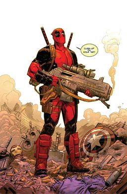

Deadpool
Deadpool (Wade Winston Wilson) é um personagem fictício do universo Marvel, que atua geralmente como anti-herói e ocasionalmente como vilão. Deadpool, cujo nome verdadeiro é Wade Winston Wilson, é um mercenário canadense marcado por ser falastrão, violento e principalmente por ser comediante e a partir ficou conhecido como o "mercenário tagarela". Tem também o fator de cura que o faz sobreviver aos piores ferimentos.
|
Deadpool
|
|  |
| Informações gerais |
| Primeira aparição |
New Mutants #98 (Fevereiro de 1991) |
| Criado por |
Rob Liefeld
Fabian Nicieza |
| Editora |
Marvel Comics |
| Informações pessoais |
| Estado atual |
Ativo |
| Nome completo |
Wade Winston Wilson |
| Codinomes
conhecidos |
Mercenário Tagarela, anti-heroi , Zenpool, Soldado Wilson, Arma XI, W3[1] |
| Características físicas |
| Espécie |
Humano mutado[2] |
| Informações profissionais |
| Ocupação |
Ex-militar, mercenário, assassino |
| Afiliações atuais |
Agência X
Quarteto Terrível
Heróis de Aluguel
S.H.I.E.L.D.
Defensores Secretos
Thunderbolts
X-Force
Tropa Deadpool
X-Men
Os Fabulosos Vingadores |
| Base de operações |
Móvel |
| Aparições |
| Gênero(s) |
Masculino Pansexual |
Deadpool foi criado por Rob Liefeld e Fabian Nicieza e apareceu pela primeira vez em 1991, como um vilão em New Mutants #98 (história que no Brasil saiu dentro de Os Fabulosos X-Men #584 em 1994). Foi inspirado no vilão da DC Comics Exterminador (Deathstroke), inclusive com seu nome parodiando o alter ego deste, "Slade Wilson".
A partir de um título próprio escrito por Joe Kelly e Ed McGuinness em 1998, ganhou estilo próprio, conhecido por sua capacidade de destruição, humor extremamente ácido, referências satíricas culturais e ocasionalmente a quebra da Quarta parede, se comunicando diretamente com o leitor. Assim como Wolverine, Deadpool é um produto do Projeto Arma X, do governo canadense, embora seu local de nascimento seja desconhecido, pois esconderam-no do mundo.
Era originalmente um adversário dos Novos Mutantes e da X-Force, posteriormente desenvolvendo um romance com uma das participantes do grupo, Siryn, filha de Banshee da X-Force, e um título em que fazia missões junto com Cable. Foi interpretado por Ryan Reynolds em X-Men Origins: Wolverine (2009) e em seu próprio filme solo (2016), que ganhou sequência em 2018.
Criação
Criado pelo escritor e desenhista Rob Liefeld e pelo escritor Fabian Nicieza,[3][4][5] Deadpool fez sua primeira aparição nas páginas da capa de The New Mutants nº 98, datada de fevereiro de 1991. De acordo com Nicieza, Liefeld criou o nome e o design visual do personagem, e o próprio Nicieza criou os maneirismos de fala do personagem.[6]
Avengers era o título favorito de Liefeld antes de X-Men, a revista que apresentava armas como o escudo do Capitão América, o martelo de Thor e o arco e flecha do Gavião Arqueiro, ele decidiu também fornecer armas para seus novos personagens. Liefeld, também um fã dos quadrinhos dos Novos Titãs, mostrou seu novo personagem ao então escritor Fabian Nicieza. Ao ver o traje e notando suas características (assassino com super agilidade), Nicieza entrou em contato com Liefeld, dizendo "este é o Deathstroke de Novos Titãs". Nicieza deu a Deadpool o nome real de "Wade Wilson" como uma piada interna por estar "relacionado" a "Slade Wilson", a verdadeira identidade de Deathstroke.[7]
Outras inspirações foram o Homem-Aranha, Wolverine e o Snake Eyes de G.I. Joe. Liefeld declara: "Wolverine e Homem-Aranha eram as duas propriedades com as quais eu competia o tempo todo. Eu não tinha essas, não tinha acesso a elas. Tinha que fazer meu próprio Homem-Aranha e Wolverine. Isso é o que Cable e Deadpool deveriam ser, meu próprio Homem-Aranha e meu próprio Wolverine."[8] "GI Joe foi minha primeira obsessão. Esses eram os brinquedos na caixa de areia, punho de kung fu, olho de águia, eu tinha GI Joe e é um mundo de personagens que eu sempre quis participar. Snake Eyes foi uma influência profunda na minha criação de Deadpool.”[9]
Biografia ficcional do personagem
Origem
Sua mãe morreu de câncer quando ele tinha 6 anos de idade e depois disso, o jovem Wade saiu do controle, tornou-se um garoto solitário e atormentado, sem nenhuma explicação. Seu pai – que era um bêbado do exército – o espancava e o tratava mal. Assim, com uma vida desestruturada, Wade tornou-se um delinquente na adolescência. Um dia chegou a agredir friamente seu pai com uma garrafa mostrando alguns traços de insanidade, matando-o no processo.
Depois disso, Wade iniciou sua carreira de mercenário. Ele aceitava assassinar apenas aqueles merecedores da morte e se valia de cirurgias plásticas e outros recursos tecnológicos para criar novas identidades sempre que falhava em um trabalho.
Pouco se sabe das subsequentes atividades mercenárias de Wade. Ele passou um tempo em Tangier, Marrocos, onde teve um romance com uma mulher chamada Francie. Quando a relação chegou ao fim, Wade viajou através da Ásia, e foi contratado no Japão pelo rei do crime Kingpin para se infiltrar numa academia de judô administrada por um criminoso rival, Oyakata. Wade passou três anos infiltrado e se envolveu romanticamente com a filha de Oyakata, Sazae. Quando lhe foi ordenado que assassinasse Oyakata, Wade abandonou sua tarefa pela primeira vez e retornou aos Estados Unidos.
De volta a América, Wade conheceu uma jovem prostituta chamada Vanessa Carlysle (também conhecida como Mímica) e se apaixonou por ela. Wade Wilson foi posteriormente contratado para assassinar uma operativa cega do governo britânico chamada Althea, também conhecida como Cega Al. O mercenário encontrou o esconderijo da cega e matou todos que estavam lá, mas deixou cega Al escapar. Irritados, os empregadores de Wade resolveram descontar sua raiva em Vanessa, mas essa foi salva por Zoe Culloden, uma empregada da firma interdimensional Landau, Luckman, Lake, e LeQuare. Culloden colocou Wade sob vigilância, acreditando que ele estava destinado a ser parte vital de uma potencial ameaça ao mundo.
Arma X e o surgimento de Deadpool
Wade Wilson encontrou novas esperanças na forma do Departamento H, uma organização para desenvolvimento de armas especiais do governo canadense. Ele se tornou cobaia de um programa de desenvolvimento super-humano administrado em parceria pelo governo americano e canadense: o Programa Arma X. Seu câncer foi temporariamente detido graças a implantação de um fator de cura derivado de outro agente do Departamento H, o mutante conhecido como Wolverine. A experiência não funcionou conforme o esperado e o tornou mentalmente instável. Wilson passou a fazer parte de uma unidade secreta de combate ao lado do quase invulnerável Sluggo e dos ciborgues Kane e Slayback. Vanessa afiliou-se ao grupo mais tarde, sob o seu codinome, Mímica, pouco depois de descobrir suas habilidades mutantes de metamorfose.
Durante uma das missões, Deadpool matou seu companheiro de equipe Slayback. Por causa disso ele foi rejeitado pelo Programa Arma X e enviado a um hospício sob a alegação de que sua condição mental instável era uma ameaça. Entretanto, os pacientes do hospício serviam de cobaias para as excêntricas experiências do doutor Killbrew e seu sádico assistente Francis, que efetuavam torturas indescritíveis. Os pacientes do lugar participavam de um jogo chamado "Deadpool", que consistia em uma aposta para tentar adivinhar quem morreria primeiro devido aos testes.
Wade foi submetido a diversas torturas experimentais onde sua aparência se transformou devido as torturas e, como consequência, engatou uma relação com a entidade cósmica conhecida como Morte. Sua frieza diante da severidade de suas torturas lhe garantiu o respeito dos outros pacientes do hospício. Isso deixou Ajax furioso e ele lobotomizou um dos amigos de Wade que teve que matar o amigo para acabar com seu sofrimento. Contudo, as regras do hospício diziam que qualquer paciente que matasse outro seria condenado à morte. Ajax, então, arrancou fora o coração de Wade e o deixou para morrer. O desejo de vingança de Wade era tão forte, que ativou seu fator de cura pela primeira vez e regenerou por completo seu coração, mas não curou suas deformações. Adotando o codinome Deadpool, Wade atacou Ajax e fugiu do hospício.
Vida de mercenário
Logo após sua fuga do hospício, Deadpool atuou como capanga do chefe do crime Cabeça-de-Martelo, mas logo retornou as suas atividades de mercenário freelancer, elaborando um traje para seu novo carater.
Sua carreira de mercenário é longa e confusa. Ele já trabalhou como assassino de Wilson Fisk (conhecido como o Rei do Crime) e até enfrentou Wolverine quando ele ainda trabalhava para o governo canadense. Em algum ponto de sua carreira e sem nenhum motivo lógico aparente, Deadpool sequestrou cega Al e a manteve prisioneira em sua casa. Toda vez que Al recorria a alguém para tentar fugir, esse alguém acabava morto. Ela, então, foi obrigada a aceitar seu cativeiro.
Alguns anos após sua fuga do hospício, Deadpool, talvez buscando compensação pelas injúrias sofridas nas mãos do doutor Killbrew, recorreu ao governo canadense e foi tratado pelo doutor Walter Langkowski (vulgo Sasquatch). Ele achou que o trabalho com o governo canadense não era adequado para seu temperamento e desistiu de se unir a eles.
Mais tarde, Deadpool foi contratado pelo gênio do crime conhecido como Mago, mas errou o endereço dele e acabou pegando um trabalho para personificar o Duende Macabro. Quando foi novamente contratado pelo Mago, Deadpool se uniu aos vilões Treinador e Constritor numa equipe de recrutamento para o Quarteto Terrível. Quando o plano falhou, Deadpool resolveu voltar a sua posição de assassino do Rei do Crime, mas suas pretensões foram embarreiradas pelo Mercenário. Deadpool, então, passou a frequentar uma pensão para mercenários chamada HellHouse, onde sua classe recebia contratos. Lá ele se estranhou com T-Ray, um mago e assassino com quem antipatizou rapidamente.
Posteriormente, Deadpool conseguiu trabalho com o mercador de armas conhecido como Tolliver, que na verdade era o viajante temporal Gênese, trabalho esse que o reuniu novamente a Sluggo e Mímica. Sem o conhecimento de Deadpool, Tolliver enviou Mímica para personificar a mutante mercenária conhecida como Dominó e espiar os movimentos dos Novos Mutantes. Deadpool contratou um homem chamado Fuinha para lhe ajudar com seu armamento e os dois logo se tornaram bons amigos.
Após algum tempo trabalhando para Tolliver, Deadpool foi enviado para matar Cable, um soldado mutante do futuro que era na verdade pai adotivo de Gênese. Deadpool acabou sendo derrotado por Cable e os Novos Mutantes. Pouco depois, Slayback ressurgiu com um corpo reconstituído ciberneticamente e clamando por vingança. Na batalha que se seguiu, Mímica foi gravemente ferida e Deadpool teve que sacrificar parte de seu fator de cura para salvar a vida dela.
Posteriormente, Deadpool ajudou Siryn num confronto contra o Fanático e Black Tom Cassidy. Ele acabou se sentindo fortemente atraído por Siryn. Inseguro sobre sua capacidade, Deadpool procura pela Mímica e a encontra namorando Kane. Ele combate Kane e Wolverine, que havia ido verificar o status do ciborgue a pedido de um amigo mútuo. Mais tarde Deadpool acaba sequestrado por cientistas à procura de uma cura para o Vírus Legado e é resgatado por Wolverine e Maverick.
Mithras
Deadpool foi procurado por Zoe Culloden, da Landau, Luckman e Lake, que acreditavam que ele estava destinado a ser Mithras, aquele que levaria a Terra a uma Era Dourada. Cético, Deadpool ignorou a proposta de Zoe e foi abatido por uma série de fracassos pessoais, entre eles a alienação de Fuinha e cega Al. Esperando dar um novo rumo a sua vida, Deadpool descobriu que não é fácil deixar a matança para trás e, a pedido dos fantasmas de seus ex-companheiros de Arma X, perseguiu e matou Ajax.
Deadpool ansiava por novos rumos em sua vida quando aceitou a oferta de Culloden, mas descobriu que seu destino era matar Tiamat, uma potencial ameaça a chegada do "Messias". Ao invés disso, Deadpool acabou matando o Messias quando descobriu que esse não tinha a intenção de trazer a paz a Terra.
De volta a vida de mercenário da Marvel
Tendo perdido seu otimismo na tarefa de se tornar uma pessoa melhor, Deadpool voltou a vida de mercenário. Preocupado com os recentes eventos, ele procurou os conselhos do psiquiatra Dr. Bong, que o aconselhou a trabalhar suas dificuldades em uma luta contra Wolverine. O combate claramente efetivou uma melhora na mente de Deadpool, mas sua psique foi abalada pela ressurreição de Mercedes Wilson, que Deadpool ainda acreditava ser sua esposa. T-Ray revela que era responsável não apenas pela ressurreição, mas que também era o verdadeiro Wade Wilson. A revelação não quebrou o espírito de Deadpool como T-Ray esperava e este fugiu com Mercedes Wilson.
Mais tarde, durante a tarefa de assassinar Duncan Vess, novamente entrou em combate contra Wolverine, que sente que há algo estranho sobre Vess. A dupla enfrentou os soldados de Vess e o próprio após ser revelado que esse se tratava de um lobisomem. Semanas depois, Deadpool passa a procurar tratamento médico para Siryn, que havia sido gravemente ferida numa missão com a X-Force. Ele se alia a misteriosa organização Watchtower e captura Wolverine em troca de tratamento para Siryn. Siryn foi curada enquanto Wolverine facilmente fugiu de seus captores.
Procurando um lugar para morar, Deadpool brevemente dividiu um apartamento com os mercenários Titania e Constritor. Entretanto Titania revelou ser Mímica disfarçada e o apartamento foi destruído pelo Mago e o Treinador, ambos em busca de vingança. Pouco depois, Deadpool estabeleceu seu quartel-general num armazém e arrumou um parceiro mirim que se chamava Kid Deadpool, mas o garoto, buscando vingança pela participação de Deadpool na morte de seu pai, explodiu o lugar.
Deadpool é rastreado por Dentes-de-Sabre e convidado a se unir ao novo Programa Arma X. Impressionado com upgrade que a organização efetua em seu fator de cura, Deadpool aceita a oferta, mas logo nota que os métodos do Arma X eram sanguinários demais até para ele.
Após a morte de Mímica nas mãos de Dentes-de-Sabre, Deadpool confronta o Diretor, apenas para ter seu fator de cura revertido a um ponto em que seu corpo perdeu coesão física e ele morreu. Nesse período, Wade tem um revival com um caso amoroso antigo, a Morte. O upgrade no fator de cura demorou, mas voltou a funcionar e ressuscitou Deadpool, porém deixando-o amnésico. Um encontro com Fuinha logo restaurou sua memória e ele descobriu quatro indivíduos que clamavam o nome "Deadpool" para si. Os impostores eram na verdade aspectos da personalidade de Deadpool que haviam ganho vida própria graças a um aparelho chamado Gemini Star, controlado pelo nêmesis de Deadpool, T-Ray. T-Ray havia sido contratado pelo vilão intergalático Thanos, que tinha uma relação com a Morte e estava com ciúmes. T-Ray planejava manifestar e extinguir cada aspecto da personalidade de Deadpool, transformando-o numa casca vazia. Entretanto, Deadpool danificou o aparelho, fazendo com que os fragmentos de sua personalidade fossem absorvidos por T-Ray, deixando-o em estado comatoso. Com seu nemesis fora do caminho, Deadpool clamou a identidade de verdadeiro Wade Wilson para si mesmo.
Substituído pelo Agente X como o Wolverine
A partir de um trabalho onde o alvo era a família criminosa Four Winds, Deadpool ganhou grande status como mercenário e fundou, com a ajuda de Sandi Brandenberg, uma companhia chamada DP Inc.. Seu sucesso entretanto, durou pouco. Cisne Negro, o assassino que verdadeiramente tinha cuidado da família de criminosos, resolveu se vingar de Deadpool por este usar sua vitória para se dar bem nos negócios. Ambos os mercenários foram tidos como mortos após um confronto explosivo, mas os poderes telepáticos de Cisne Negro fizeram com que as memórias e habilidades de ambos se fundissem no corpo de seu subalterno Nijo. O fator de cura de Deadpool ressuscitou Nijo que, ferido e amnésico, acabou indo parar no apartamento de Sandi. Sandi acreditou que Nijo era Deadpool e tratou seus ferimentos. Adotando o nome Alex Hayden, e o codinome Agente X, Nijo se uniu a Sandi e o Treinador numa nova organização mercenária, a Agência X.
Cisne Negro logo ressurgiu, trazendo Deadpool consigo, e disposto a restaurar as mentes dos três mercenários aos seus estados prévios. Durante a transferência, Cisne traiu Deadpool e Nijo e absorveu todas as habilidades para si, adquirindo grande poder. Com a ajuda de seus amigos, Nijo rompeu o escudo telepático de Cisne e o derrotou, revertendo a transferência. Com as coisas de volta ao normal, Deadpool recusou uma oferta de se unir a Agência X e retornou a sua carreira solo.
Poderes e habilidades
Como civil, Wade desenvolveu um câncer incurável e quando teve a chance logo se prontificou a participar do programa militar Arma X. Esse programa (o mesmo que transformou Wolverine) prometeu curar o câncer de Wade e ao fazer isso acabou dando-lhe treinamento especial e o poder do fator de cura, que foi extraído de Wolverine. Porém, o fator de cura quando reage em seu corpo deixa sequelas, mantendo sua face desfigurada e sua mente perigosamente instável. Além de ser um poliglota, chegando a saber alemão, espanhol, japonês e diversos outros idiomas.
Além de possuir uma regeneração incomparável, Wade mostrou em algumas hq's possuir uma bolsa magica da qual pode pegar qualquer item.
Regeneração celular
Wade Wilson (Deadpool) possui o segundo melhor fator de cura da Marvel, sendo o primeiro lugar o Hulk. Wade adquiriu seu fator de cura de Wolverine no projeto Arma X, porém teve a capacidade regenerativa ampliada, tal capacidade foi posta a prova quando Wade teve seu coração arrancado por Ajax, um assistente do Departamento H onde Wade fora mantido preso, então seu fator de cura entrou em ação e regenerou seu coração por completo, porém seu fator de cura lhe propiciou séria instabilidade mental e amnésia, o que faz com que seu comportamento seja imprevisível. Recentemente ele foi curado de seus problemas mentais, mas continua com o humor sarcástico e comportamento imprevisível.
Seu fator de cura o protege contra qualquer telepata que tente ler sua mente ou controlá-lo, também impede o avanço do câncer impregnado em seu organismo, sem no entanto eliminá-lo (provavelmente porque o fator de cura lhe foi aplicado depois que o câncer se alojou em seu corpo). Ele é imune a venenos e qualquer outra substância nociva.
Por conta de seu alto poder de cura, Deadpool tem um comportamento suicida, o que o levou a se encontrar com a Senhora Morte (sua personificação no Universo Marvel) e se apaixonar por ela. Enciumado, Thanos amaldiçoou Deadpool com imortalidade, o que faz com que seu fator de cura se recupere de ferimentos extremos, como quando foi decapitado pelo Carrasco a mando de Norman Osborn. Deadpool teve a cabeça recolocada sobre seu corpo depois de algum tempo e não sofreu maiores sequelas. Em outra ocasião, uma flecha disparada pelo Mercenário atravessou-lhe o crânio e o cérebro, tendo como único efeito uma perda temporária da coordenação motora, sanado quando ele conseguiu remover a flecha.
Habilidades Físicas
Devido ao projeto Arma X Wade teve sua força aumentada a tal ponto que é impossível que outro humano possa conseguir, também teve seus reflexos melhorados, tendo um tempo de reação a golpes extraordinário, sagaz e habilidoso, já enganou até mesmo os sentidos do Demolidor.
É também exímio lutador com armas e espadas, é um ótimo atirador da Marvel e na luta com espadas é impecável. Também maneja qualquer tipo de arma com perfeição.
Não existem também confirmações, mas os fãs afirmam que Wade sofre de esquizofrenia.
O personagem Deadpool tem uma força de 2 toneladas, algo sobre-humano.
Outras versões
Era do Apocalipse
Na Era do Apocalipse, ele é conhecido como "Wade Morto", diferente de sua versão normal ele não se regenera plenamente, fazendo com que a parte regenerada de seu corpo fique com aspecto e cheiro apodrecido, dai o nome "Wade Morto", além disso este Deadpool não tem a capacidade de quebrar "a quarta parede". Outra diferença é que este Deadpool é extremamente depressivo e confuso.
Ele fazia parte de um grupo de elite de Apocalipse, que tinha além dele a mutante psionica Damask e Danielle Moonstar, por quem Wade nutria uma paixão platônica.
Ele ataca o Juggernaut com um lança foguetes, o que se mostra inútil, mas juggernaut morre devido a um derrame, uma vez que ele havia jurado nunca mais atacar ninguém e ficou em um conflito ao ver seus amigos ao lado de Wolverine, Blob e William Stryker, entre outros. Sua principal característica no filme é o humor sarcástico e a habilidade com as espadas. Também é totalmente diferente de sua versão original, tendo, por exemplo, diversos poderes que não são fiéis aos quadrinhos, no filme ele é capaz de se teleportar, adquirida no projeto Arma X de John Wraith. Também pode soltar rajadas ópticas, capacidade obtida de Scott Summers, o Ciclope. Também é mostrado que suas espadas passam a sair de seus punhos, assim como as garras de Wolverine.
No filme ele também não utiliza o seu uniforme característico, com a famosa "marca" ao redor dos olhos sendo fruto de diversas cirurgias, porém a mudança mais drástica que fizeram nesta versão dele no filme foi a decisão de Stryker de costurar a boca de Wade, justamente porque ele falava muito, coisa citada no encontro de Deadpool com Wolverine, onde Wolverine luta com ele. Durante o filme, Wade, após ter sido transformado em Deadpool, estava sob controle mental de Stryker.
Em seus primeiros quadrinhos também é possível ver Wade utilizando o teletransporte, mas isso é graças a um dispositivo acoplado à fivela do seu cinto, não sendo exatamente uma "super-habilidade".
Zumbis Marvel
Uma versão zumbi de Deadpool é vista entre outros zumbis atacando o Surfista Prateado, como muitos zumbis ele é morto. Essa mesma versão zumbi fez uma breve parceria com o Deadpool da Terra 616 mais tarde, segundo a história que o próprio zumbi contou, ao atacar a Terra 616, seu corpo explodiu e sua cabeça voou até um barquinho que ficou à deriva até chegar à Terra Selvagem, onde uma tribo de nativos o tomou como um deus. Enquanto isso, o Deadpool da Terra 616 havia sido incumbido pela I.M.A. de pegar um item que transformaria toda a raça humana em zumbis sob seu controle, o que Wade não sabia é que o item era sua própria cabeça zumbi. Algumas confusões mais tarde e a cabeça zumbi de Deadpool acabou retornando a um outro barquinho e está novamente à deriva no mar desde então
Ultimate Deadpool
Esta versão de Deadpool aparece em um arco de história do Ultimate Homem-Aranha. Aqui ele é um supremacista que odeia mutantes, que participa de um jogo de caça à mutantes promovido por Mojo. Ele possui muitas similaridades com o personagem Donald Pierce.
Deadpool Mata o Universo Marvel
Nessa História alternativa, logo após ser capturado, Deadpool é levado a um hospício pelos X-Men, onde é internado. O doutor responsável pelo seu tratamento, um pequeno alienígena disfarçado, logo após observar que o paciente era uma cobaia de alto potencial, tentou controlá-lo para destruir todo o universo Marvel e tomar o controle, mas Deadpool se desfaz do seu controle, o mata e decide seguir o plano sozinho. Depois de fugir, Deadpool termina por perceber que ele mesmo pode ser a fonte do universo Marvel e, por isso, resolve chegar ao início de tudo, chegando a sair da sua dimensão e a matar seus criadores.[10]